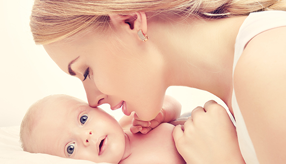
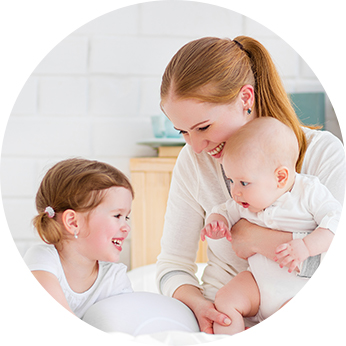

品牌介绍
BRAND INTRODUCTION
Commitment to growth up healthy
英國百諾恩有限公司一直致力研究初生婴儿、婴幼儿、妈妈幼嫩脆弱的皮肤，并根据其特别的需求研制出英国皇家护理级母婴用品。
百诺恩科研所是百诺恩品牌长青的坚实科学后盾，甄选全球食品级优质原料，以严苛的医学安全标准、创新理念，为全球宝宝及妈妈健康保驾护航。
UK BEINOEN LIMITED CO., is committed to make the skin research for newborn babies, babies, mother, according to the research and special application requirement to develop the super safety/ comfortable products for mother and baby.
UK BEINOEN INSTITUTES provide the platform to keep the research, Regarding the raw material selection we choose the food-class level, we follow the strict medical science criteria to initiate the innovation just keep original vision from our heart to protect the health of global baby and mother

Commitment to growth up healthy
品牌故事
BRAND HISTORY
Commitment to growth up healthy
对品质的偏爱，是百诺恩对baby最好的宠爱——源于英国皇家百年的护理经验。每一个新生命的到来都蕴含着父母无限的爱。百诺恩（BEINOEN）比父母更加懂得宝宝的需求。百诺恩（BEINOEN）一直用优质创新带来更好的产品，让全球宝宝在无尽关爱中，安睡，畅玩。百诺恩只用心做好一件事：为全球宝宝提供最专业的护理产品，让宝宝在爱与欢乐中健康成长。
BEINOEN is committed to deliver the super quality product for baby—Date back to the 100 years baby CARE experience from UK.
All the newborns are full of endless love from parents. BEINOEN are more professional than the parents to understand the requirements from babies. BEINOEN is committed to focus on product improvement by innovation to let all babies have a good sleep and fun under our endless care. Our vision is that BEINOEN provide the most professional baby care products all over the world, to build the good environment with love and happiness for all babies growing up.
品牌理念
BRAND PHILOSOPHY
Commitment to growth up healthy

百诺品质、恩享生活－百诺恩
Commitment quality, enjoy life